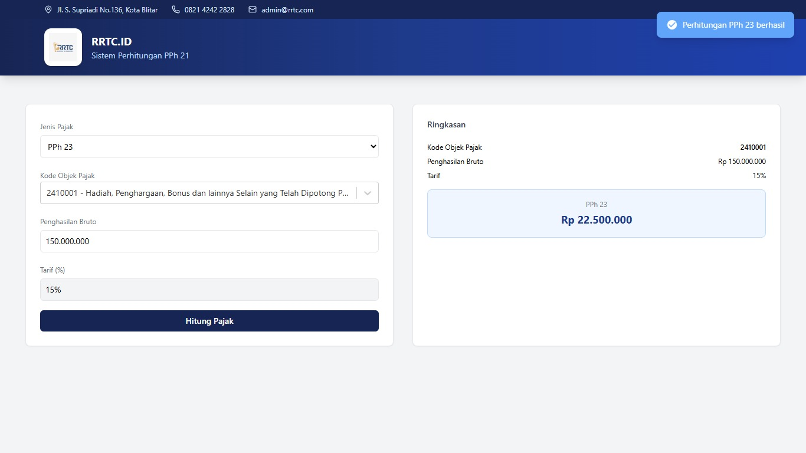
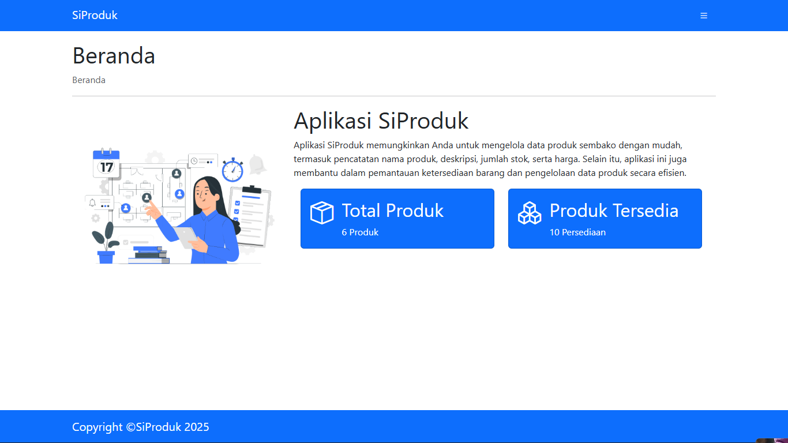
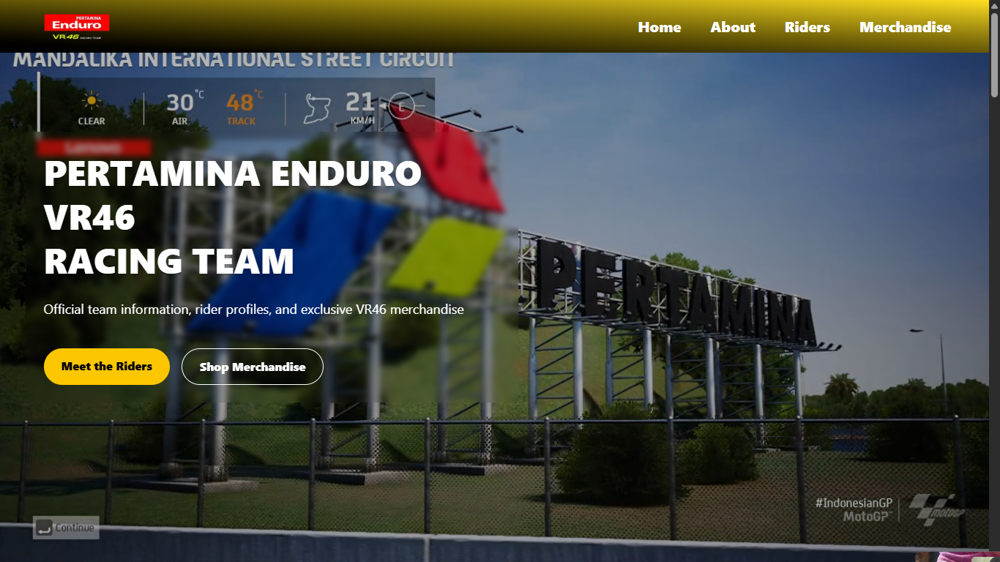
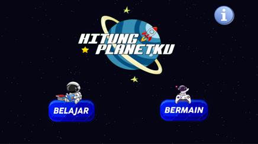

Saya senang membangun situs web, aplikasi, dan game sambil terus mengeksplorasi teknologi baru dan meningkatkan keterampilan pengembangan saya.
Developer
Kreatif
Saya adalah siswa Rekayasa Perangkat Lunak (RPL) dengan minat kuat pada teknologi dan pengembangan perangkat lunak. Saya senang mempelajari hal-hal baru, bereksperimen dengan berbagai perangkat lunak dan teknologi, serta mengubah ide menjadi produk digital yang fungsional.
Minat utama saya meliputi pengembangan web, aplikasi, game, dan teknologi kreatif. Saya percaya bahwa setiap proyek adalah kesempatan untuk mempelajari sesuatu yang baru dan meningkatkan keterampilan saya.
Membangun antarmuka pengguna yang responsif dan interaktif.
Mengembangkan logika sisi server dan basis data yang tangguh.
Kontrol versi dan lingkungan pengembangan.
Pengembangan game & perangkat lunak pencahayaan profesional.

Aplikasi perhitungan pajak berbasis web yang dirancang untuk menghitung beberapa kategori pajak di Indonesia. Berfokus pada operasi logika yang akurat dan arsitektur backend.

Aplikasi manajemen produk dan CRUD untuk mengelola data produk. Menyediakan antarmuka intuitif untuk entri dan modifikasi data yang lancar.

Proyek pengembangan web yang menampilkan penggunaan Tailwind CSS untuk membangun antarmuka yang responsif dan modern.

Game edukasi berbasis web yang mengajarkan konsep perhitungan dasar matematika dan mengenalkan planet ditata surya. Menggunakan Construct 3 untuk pengembangan game interaktif.
Mendapatkan pengalaman praktis melalui kegiatan magang / PKL. Berfokus pada aktivitas pengembangan perangkat lunak, berkolaborasi dalam proyek, dan menerapkan pengetahuan akademis ke skenario dunia nyata.
Berkolaborasi dengan rekan satu tim dalam mengembangkan aplikasi terstruktur sebagai bagian dari kurikulum jurusan Rekayasa Perangkat Lunak.
Saat ini sedang mengembangkan keterampilan dasar dan lanjutan dalam rekayasa perangkat lunak, pengembangan web, basis data, prinsip pemrograman, dan pengembangan aplikasi full-stack.
Menyelesaikan pendidikan menengah pertama dengan dasar akademik yang kuat sebelum melanjutkan fokus dan minat ke bidang teknologi informasi.
Pendidikan dasar di mana saya mulai mengembangkan keingintahuan, semangat belajar, dan kemampuan untuk mengeksplorasi banyak hal baru.
Pendidikan awal yang membentuk fondasi pembelajaran, keterampilan sosial, dan rasa ingin tahu yang akan berkembang di masa depan.
Mengeksplorasi tren teknologi terbaru, perangkat lunak, dan bagaimana sistem bekerja di balik layar.
Mendesain mekanika permainan, antarmuka pengguna, dan menciptakan pengalaman interaktif yang menyenangkan.
Penggemar balap kecepatan tinggi, mengikuti strategi dan teknologi ajang MotoGP.
Senang mempelajari bahasa asing dan memperluas wawasan, khususnya mempelajari tata bahasa dan budaya Jepang yang kaya akan nilai kedisiplinan.
Mengeksplorasi estetika visual dan pengkodean dalam sistem pencahayaan panggung menggunakan perangkat lunak profesional seperti GrandMA.
Saya tidak hanya menulis kode, tetapi saya selalu tertarik untuk mempelajari hal-hal baru dan menemukan secara detail bagaimana sebuah sistem bekerja di balik layar.
Dunia teknologi bergerak cepat. Saya merasa sangat nyaman mengeksplorasi berbagai bahasa pemrograman, alat pengembangan baru, dan beradaptasi dengan alur kerja yang berbeda.
Pengembangan web adalah perpaduan logika dan seni. Saya senang merancang pengalaman digital yang tidak hanya berfungsi dengan baik secara teknis, tetapi juga memiliki daya tarik visual tinggi.
Bagi saya, error pada kode adalah tantangan, bukan hambatan. Saya menyukai proses menganalisis masalah secara logis dan menemukan solusi praktis serta efisien di setiap proyek.
Punya ide, proyek, atau peluang? Mari terhubung dan ciptakan sesuatu yang bermakna bersama.